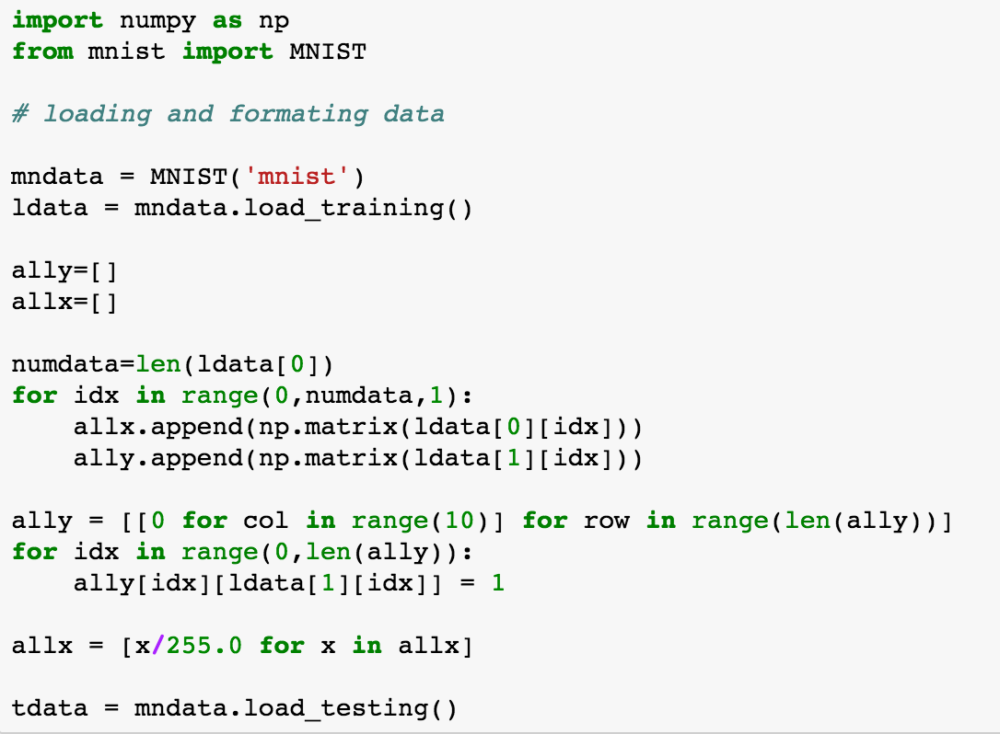

Assignment 9: Deep Learning: Fully Connected Networks
Deadline: April 13 (Thursday), 2017 at 5pm
Write a program in python to implement the Fully Connected
Networks (FCNs). Follow the below instructions.
- Implemant a fixed network to solve the XOR
operation, where the total
number of neurons is 3 and the number of layers is 2.
Use the batch gradient descent for the optimization.
- Show the graph of the training process, where the
x-axis represents the epoch, and the y-axis represents the
overall error.
- Verify your network in the testing stage, by giving any
possible values as the
input. Show both your prediction and the groundtruth.
- Implement a flexible network to classify MNIST
data. Use the mini-batch gradient descent for the optimization.
To have a full grade, your network must be flexible.
The user
should be able to change the network configuration (changing
the numbers of neurons and layers). MNIST data can be
downloaded from any source on the internet; or, follow this
sample code (you need to install MNIST, e.g., "pip install
mnist"). Note that, ally = allt and numdata = N.

- Show the graph of the training process, where the
x-axis represents the epoch, and the y-axis represents the
overall error.
- Verify your network in the testing stage, by computing
all the testing data (10,000 testing data).
Show the percentage of the correct
predictions.
- Using the implementation for the MNIST above,
classify CIFAR10 dataset. CIFAR10 can be
downloaded from
here: website.
- Show the graph of the training process, where the
x-axis represents the epoch, and the y-axis represents the
overall error.
- Verify your network in the testing stage, by computing
all the testing data (10,000 testing data).
Show the percentage of the correct
predictions.
Submission
Submit both your code and results in an ipython-notebook format via Canvas by
the deadline.